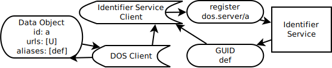

This document offers ways for platforms that are part of the NIH Data Commons Pilot to demonstrate Key Capability 2 (KC2), which coordinates the findability of data across Commons Platforms. This document was prepared for Team Calcium. Examples and links from existing platforms will be added as they become available.
If you know of useful Identifier Schemes or Services please make a Pull Request!
This document is meant to provide strategies for Data Platforms, which have internal data management needs, to integrate with Identifier Services, Resolvers, and Prefix Services to provide a ramp to easy data interoperability.
Data that is within a Data Platform will usually guarantee uniqueness within that platform. Oftentimes, the identifier scheme was chosen to satisfy internal technical needs. However, the same identifier may represent different data in another platform. Globally Unique Identifiers (GUIDs) provide a way to address data across various platforms.
This document's Use Cases are structured in such a way to protect Data Platforms from changes that would alter their internal functionality: Data Platforms should use the identifier scheme that best suits their existing use case.
Satisfying Key Capability 2 (GUIDs) minimally requires Data Platforms to maintain aliases to GUIDs when they are available to satisfy the needs of findability or reproducibility. This requires, at least, a way to modify metadata to include newly "minted" GUIDs and later find that data using the new identifier.
For the purposes of this document it is important to separate the concepts of data from metadata. Data are the first order items one would like to share, for example, a VCF might be data, while the file checksum would be metadata.
Metadata describe data and are usually string keys paired with string, numeric, array, or object-like values. Metadata should be representable in JSON schemas.
JavaScript Object Notation is a scheme for transmitting data between web services. Both metadata and interface methods for services in this document communicate using JSON.
A file, resource, or API that has been uniquely identified for a given service, and which provides a minimum of fields from the Data Object Service schema.
Data providers coordinate their platforms using internal tools, which they have they often have the ability to rapidly iterate on. Data providers may provision data using a variety of storage and metadata indexing services.
Registries allow identifiers for data to be managed and shared separately from the data. They require core metadata in order to register an item.
In order to provide stable identifier namespaces, prefix services like identifers.org allow one to redirect prefixes, like dos, to stable URLs. They only store metadata about the service.
Using a given identifier, these services allow clients to find the proper service to resolve more metadata about the Data Object.
The template that is used to issue new identifiers for a given service, for example, UUID has the format 4be0071d-b36e-4414-a7ee-7b879f60be7a, whereas, another service may iterate numerically from 0.
### 1 Providing a GUID for a Data Object via client
#### 1.1 Get a Data Object by Data Object Identifier

A Data Provider offers some data that can be uniquely identified using an internal identifer scheme. Using a DOS client the Data Object can be retrieved using a Data Object Identifier.
#### 1.2 Register the Data Object URL at an Identifier Service
The client then modifies the local metadata format to accord to an Identifier Service's request schema. The client then requests a "newly minted" identifier for the Data Object from the Identifier Service. And modifies the metadata of their local copy of the Data Object to include the GUID as an alias.
#### 1.3 Update the Data Object Metadata

The client then requests to update the Data Object by sending an Update request to the DOS. Then, another client can find the data by GUID by listing Data Objects that match the requested GUID.
### 2 Providing a GUID for a Data Object Automatically
#### 2.1 Using an Upload Hook to Get A Data Object

By using an Upload Hook that subscribes to changes to the Object Store, or which periodically polls for changes against a Data Object Service, software can automate the retrieval a Data Object. This is similar to how a client performed the retrieval in 1.1, without requiring human intervention.
The remaining interaction proceeds the same as 1.2 with the assumption that the Identifier Service has a simple HTTP API. This allows clients to automate the interaction of registering metadata.
Similar to Use Case 1, data becomes resolvable by GUID once its Data Object metadata has been changed to reflect the newly minted external identifier.
By satisfying this Use Case, Data Providers can provide strong guarantees that all their data will be resolvable across platforms.
It is expected that in practice some mixture of automated and curated aliasing will be used. Take, for example, the case that a Data Object has had a GUID registered for it by another Data Provider.
Automatically generating another GUID for this same Object would pollute the identifier space. It is up to Data Providers to enact data management policies that will reduce unnecessary usage of GUIDs. Proper usage of the Data Object Service should allow platforms to reason about the presence of some data in another platform before minting another GUID.
### 3 Using a client to find data using a GUID

A client with a GUID should be able to make a request to a Data Provider for data that matches that GUID. If the metadata for the item includes a GUID, the metadata for that item will be returned, which includes details necessary to access or download the Data Object.
This presumes that Use Case 1 has been fulfilled, such that content can be addressed by GUID.
Assuming that 1 has been fulfilled across platforms, a DOS client with a GUID should be able to resolve that data across platforms. The client makes a request to each platform's respectively, and the platform returns a list of matching Data Objects. These Data Objects may differ in their url, or other metadata, but should through proper identifier reuse point to the same data.
It is important to note that since GUIDs are unique as a matter of service they cannot be addressed uniquely across platforms. Instead a list of Data Objects matching the alias is returned to ease the process of forming consensus around identity.
### 4 Resolving Data Object Identifiers across platforms
A client with a Data Object Identifier should be able find the Data for that identifier without requesting from each of the Commons Platforms. Instead of making the request against each platform, they make their request to an identifier resolver, which will either return the proper metadata from the Data Provider, or redirect the client to it.
First, the client makes a request to the resolver using a simple HTTP get request. The resolver curates a list of services to request against. It issues the request against each of the services. In this case, the data is hosted in a single platform, and so just that metadata is returned to the client.
### 5 Resolving Data Object Identifiers across platforms using a Prefix Service
Using an identifier and a prefix, a client should be able to request more metadata for a given Data Object. The client first makes a request against a Prefix Service (or Namespace Service) with the proper prefix and identifier.
The Prefix Service maintains a list of prefixes to Identifier Services and redirects the incoming request to the correct service according to the request. The client is then returned metadata necessary to access the Data Object.
See identifiers.org.
The minimal metadata required to register for a GUID depends on the underlying service and use case. However, to improve interoperability, these metadata should be describable using JSON schemas.
For the purposes of registering a Data Object, which makes accessible some data via URL, it is expected that a URL at minimum is provided. A list of typed checksums should be provided when available to verify downloads. For more information see Data Object Service Schemas.
Identifier services will require more or less information depending on the use case covered. For example, issuing a DOI for a paper would require a list of authors.
Data Platforms are NOT required to use a normalized identifier scheme. A number of identifier schemes exist that can be used to ensure uniqueness across services.
## Identifier and Prefix Services
Public services for registering identifiers exist. They differ in their required metadata, provided services, and necessary metadata. These services should be used with the appropriate above services to register a GUID as necessary.
To provide practical instruction into how GUID resolution can work in the in the Data Commons we offer this brief case study of interoperating with the Human Cell Atlas Data Storage System, which replicates data across cloud stores.
On the left of the image, the Data Store System (DSS) replicates data in Object Stores and indexes in three commercial clouds. These data are made available via an HTTP API, labeled DSS API.
The dss-azul-indexer takes advantage of a DSS feature to subscribe to changes in the data store. New bundles are sent to the dss-azul-indexer, which attempts to normalize documents and add the to the azul-index. This index is then accessed by the dos-azul-lambda.
To satisfy Use Case 1, a GUID is minted for a Data Object. An authorized DOS client can then send an UpdateDataObjectRequest to include the GUID as an alias. The dos-azul-lambda updates the azul-index accordingly.
By enabling easy modification of metadata and presenting that metadata using the Data Object Service, data in the DSS can be addressed by GUID.
A client can then make a ListDataObjectsRequest with a GUID and expect a list of Data Objects matching the request returned.